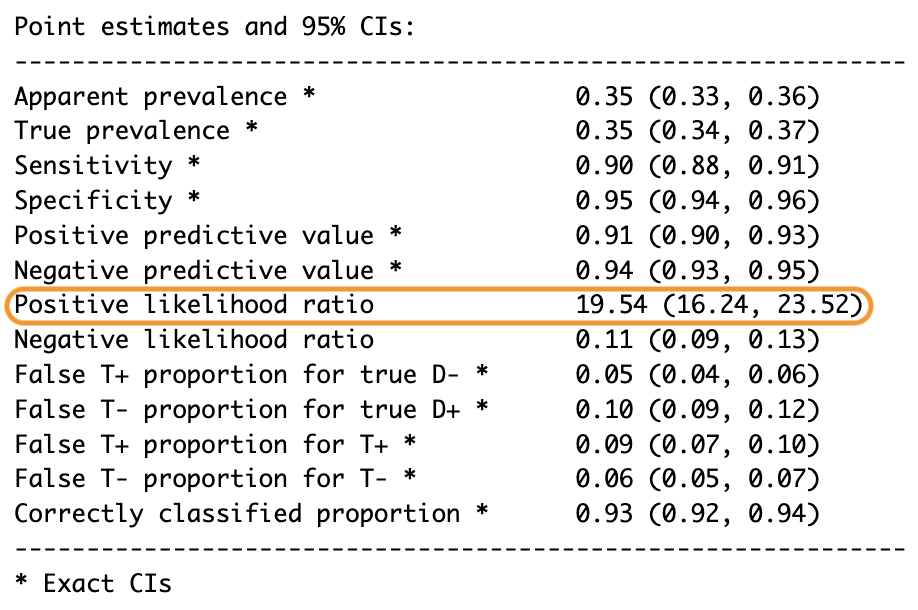
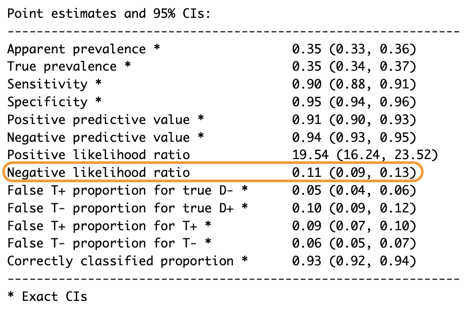
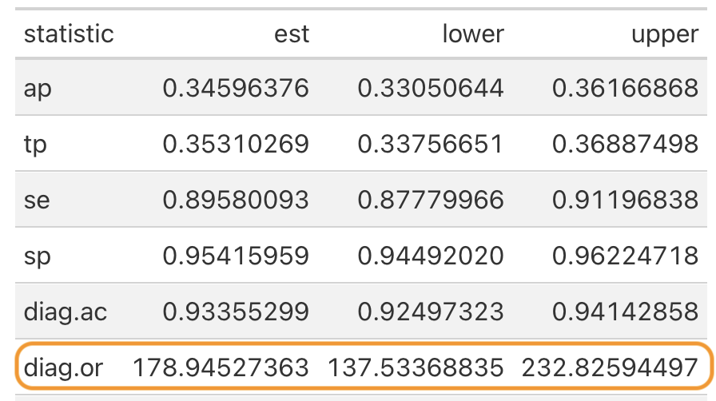

summary(epiR::epi.tests(train_confusion$table)) |>
gt::gt() |>
gt::tab_style(
style = list(
gt::cell_fill(color = "orange"),
gt::cell_text(weight = "bold")
),
locations = gt::cells_body(
columns = statistic,
rows = statistic >= "youden"
)
)La razón de verosimilitud positiva puede salvar vidas. Imagina esto: una mañana me despierto con un dolor agudo en el pecho, como si me hubieran golpeado con un tren. El pánico se apodera de mí. ¿Es un ataque al corazón? Llamo a una ambulancia. Mientras espero, los paramédicos llegan rápidamente y me realizan una prueba de sangre rápida llamada troponina para verificar daño en el músculo cardíaco. La razón de verosimilitud positiva de esta prueba es alta, lo que significa que un resultado positivo sugiere con mucha fuerza que estoy sufriendo un ataque al corazón. Esto permite a los médicos actuar rápidamente y con confianza, lo que podría salvar mi vida.
Razón de verosimilitud positiva
Así que la razón de verosimilitud positiva responde una pregunta crítica: ¿Cuánto debes confiar en un resultado positivo de la prueba? En concreto, la razón de verosimilitud positiva nos dice cuántas veces es más probable que un resultado positivo ocurra en una persona enferma en comparación con una persona sana. Es por eso que se llama “positiva”: se centra en los resultados positivos.

La forma más sencilla de calcular la razón de verosimilitud positiva es dividiendo la tasa de verdaderos positivos (llamada sensibilidad) entre la tasa de falsos positivos (que es 1 - especificidad).
\[ LR+=\frac{TPR}{FPR}=\frac{Sensibilidad}{1-Especificidad}=\frac{\frac{TP}{TP+FN}}{1-\frac{TN}{TN+FP}} \]
Esto es lo que significa:
- La tasa de verdaderos positivos, o sensibilidad, te dice cuántas veces la prueba identifica correctamente a las personas que tienen la enfermedad.
- La tasa de falsos positivos, que es 1 - especificidad, muestra cuántas veces la prueba dice incorrectamente que las personas sanas están enfermas.
Si quieres profundizar más, incluso podrías calcularlo usando una matriz de confusión, pero honestamente, no es necesario porque herramientas como las funciones epi.tests() del paquete epiR ya hacen los cálculos por ti.
Pero, ¿por qué importa la razón de verosimilitud positiva? Combina la sensibilidad y la especificidad en un solo número que funciona en diferentes situaciones, a diferencia de los valores predictivos, que cambian dependiendo de la prevalencia de la enfermedad. La razón de verosimilitud positiva permanece consistente e independiente de la prevalencia, lo que la convierte en una herramienta universal para evaluar pruebas diagnósticas o incluso para comparar modelos de aprendizaje automático. Con una regla sencilla: cuanto mayor sea la razón de verosimilitud positiva, mejor es el modelo, ya que es una proporción.
Si está por debajo de uno, el modelo es peor que un adivinanza al azar: evítalo. Si es igual a uno, no ofrece información útil: ignóralo. Cuando está entre 1 y 5, la prueba es algo útil pero no definitiva, así que úsala con cautela. Si está entre 5 y 10, es moderadamente fuerte, y finalmente, si supera los 10, la prueba es muy fuerte, lo que significa que un resultado positivo es altamente confiable.
Por ejemplo, al predecir la subida o bajada de las acciones, una razón de verosimilitud positiva de 19.54 significa que una predicción de subida es 19.54 veces más probable para alguno que realmente subió que para uno que no lo hizo.
Pero, ¿qué hay de ese dolor en el pecho que parecía gritar “ataque al corazón”? Bueno, después de llamar a la ambulancia y calmarme lo suficiente como para pensar con claridad, me di cuenta de algo: mi propósito de Año Nuevo de ponarme en forma me llevó a entrenar demasiado los músculos del pecho el día anterior.
Razón de verosimilitud negativa
Mientras la razón de verosimilitud positiva es fantástica para interpretar resultados positivos, ¿qué sucede cuando la prueba es negativa? En ese caso, necesitamos la razón de verosimilitud negativa, que se centra en los resultados negativos y es, en muchos aspectos, lo opuesto a la razón de verosimilitud positiva.
La razón de verosimilitud negativa responde otra pregunta crítica: ¿Cuánto puedes confiar en un resultado negativo? En palabras sencillas, nos dice cuántas veces es más probable que un resultado negativo ocurra en una persona sana en comparación con una persona enferma. Es por eso que se llama “negativa”: se centra en los resultados negativos.

En aprendizaje automático, la razón de verosimilitud negativa funciona de manera similar: nos dice qué tan bien un modelo predice negativos cuando realmente son negativos en comparación con cuando son positivos. La matemática detrás de la razón de verosimilitud negativa es sencilla: en lugar de usar la sensibilidad en el numerador, usamos 1 - sensibilidad (también conocida como la tasa de falsos negativos), que nos dice cuántas veces la prueba no detecta correctamente a las personas enfermas. En el denominador, en lugar de 1 - especificidad, usamos la especificidad o la tasa de verdaderos negativos, que nos dice cuántas veces la prueba identifica correctamente a las personas sanas.
\[ LR-=\frac{1-Sensibilidad}{Especificidad}=\frac{FNR}{TNR}=\frac{1-\frac{TP}{TP+FN}}{\frac{TN}{TN+FP}} \]
En términos más sencillos, la razón de verosimilitud negativa compara la probabilidad de un resultado negativo en personas enfermas con la probabilidad de un resultado negativo en personas sanas. La razón de verosimilitud negativa es especialmente útil para descartar condiciones. Su interpretación es sencilla: cuanto más baja sea la razón de verosimilitud negativa, mejor. Por ejemplo, si está por debajo de 0.1, la prueba es excelente para descartar la condición; si está entre 0.1 y 0.5, es decente pero no perfecta; si está entre 0.5 y 1, tiene un valor limitado; y si supera 1, la prueba es poco confiable.
Volviendo a nuestro ejemplo de las acciones, si la razón de verosimilitud negativa es 0.11, al invertirla nos da 9.09, lo que significa que predecir una que no subió es 9 veces más probable para una que realmente no subió en comparación con una que sí lo hizo.
En resumen, una buena prueba diagnóstica o un buen modelo de aprendizaje automático debe destacar en dos áreas clave: confirmar positivos, lo que se indica con una razón de verosimilitud positiva mayor a 1, y descartar negativos, lo que se refleja con una razón de verosimilitud negativa menor a 1. Si ambas razones son malas, lo que significa que la razón de verosimilitud positiva está por debajo de 1 y la razón de verosimilitud negativa está por encima de 1, la prueba o el modelo es esencialmente inútil. Así que esta pequeña parte de los resultados de la matriz de confusión ofrece una forma rápida, poderosa e increíblemente práctica de evaluar la calidad del modelo, y personalmente creo que está muy subestimada.
Razón de verosimilitud diagnóstica
Ahora, mientras que la razón de verosimilitud positiva y la razón de verosimilitud negativa son excelentes para evaluar cómo se desempeña una prueba o un modelo en la confirmación de positivos o en el descarte de negativos, sus resultados son muy direccionales, ya sea hacia positivos o hacia negativos. Pero a veces queremos una sola métrica que resuma el rendimiento general de una prueba o un modelo sin dividirlo en direcciones positivas y negativas, y es ahí donde entra en juego la razón de verosimilitud diagnóstica.
Usa la razón de verosimilitud diagnóstica cuando necesites un solo número que represente el poder diagnóstico general de una prueba o un modelo. Úsala también cuando estés comparando múltiples pruebas o modelos y quieras una forma rápida de clasificarlos. Finalmente, usa la razón de verosimilitud diagnóstica si no te importa distinguir entre la razón de verosimilitud positiva y la negativa, sino que quieres una visión holística de qué tan bien discrimina la prueba entre personas enfermas y sanas, similar a la precisión, pero siendo completamente independiente de la prevalencia.
Una razón de verosimilitud diagnóstica alta significa que la prueba es excelente para distinguir entre personas enfermas y sanas. Podemos obtener la razón de verosimilitud diagnóstica del resumen de las pruebas

o calcularla fácilmente de varias maneras. La más sencilla es dividiendo la razón de verosimilitud positiva entre la razón de verosimilitud negativa.
\[ DOR=\frac{LR+}{LR-} \]
\[ DOR=\frac{\frac{TP}{FN}}{\frac{FP}{TN}}=\frac{TP*TN}{FP*FN} \]
Alternativamente, puedes calcular la razón de verosimilitud diagnóstica directamente desde la matriz de confusión o usando sensibilidad y especificidad.
\[ DOR=\frac{Sensibilidad*Especificidad}{(1-Sensibilidad)*(1-Especificidad)} \]
Al igual que una razón de probabilidades regular, la razón de verosimilitud diagnóstica oscila entre 0 e infinito. Una razón de verosimilitud diagnóstica por debajo de 1 indica una mala prueba, mientras que una razón por encima de 1 es buena, y cuanto mayor sea el número, mejor se desempeña el modelo. Una razón de verosimilitud diagnóstica de 19.54, como la nuestra, muestra que nuestro modelo es muy informativo.
Mientras la razón de verosimilitud diagnóstica es robusta ante pequeños desequilibrios en tus datos, por ejemplo, si hay más personas sanas que enfermas, puede volverse inestable en dos situaciones: primera, tamaños de muestra pequeños, donde no hay suficientes verdaderos positivos o verdaderos negativos, lo que puede distorsionar las proporciones; y segunda, desequilibrios extremos, donde un grupo es mucho mayor que el otro, como 99% de sanos versus 1% de enfermos. En estos casos, la razón de verosimilitud diagnóstica podría no contar toda la historia.
En escenarios de la vida real, donde el desequilibrio es bastante común, querrás usar métricas que manejen mejor estos desafíos, como la F1 score, el índice de éxito crítico (CSI) y el coeficiente de correlación de Matthew (MCC), que te ayudarán a evaluar modelos incluso en conjuntos de datos muy desequilibrados. Así que, para aprender todo sobre ellos, solo tienes que ver este post.
Cómo citar
BibTeX
@online{chiquito_valencia2025,
author = {Chiquito Valencia, Cristian},
title = {Razones de Verosimilitud: Métricas Clave Para Evaluar Pruebas
Diagnósticas y Modelos de {ML}},
date = {2025-04-19},
url = {https://cchiquitovalencia.github.io/posts/2025-04-19-predictions_on_stocks4/},
langid = {en}
}
Por favor, cita este trabajo como:
Chiquito Valencia, Cristian. 2025. “Razones de Verosimilitud:
Métricas Clave Para Evaluar Pruebas Diagnósticas y Modelos de
ML.” April 19, 2025. https://cchiquitovalencia.github.io/posts/2025-04-19-predictions_on_stocks4/.